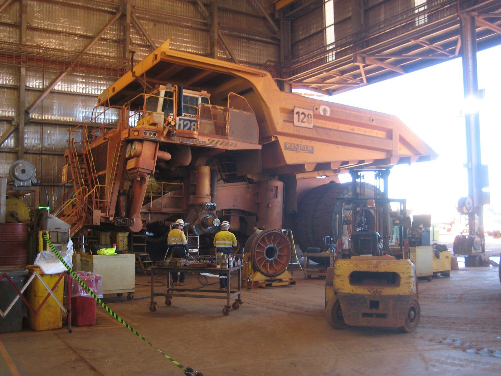
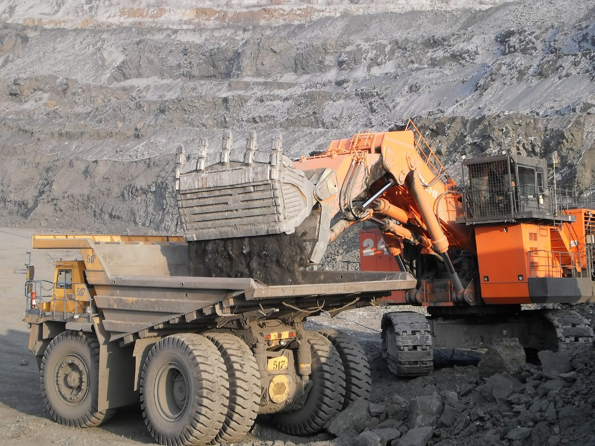

Working at Kando.
2,340 colleagues, 93% Congolese, 41% from Lualaba. We hire locally first and we train: 48,000 hours in 2025.
Why join us
Safety
ISO 45001 certified site, life-saving rules, the right to refuse unsafe work.
Training
On-site training centre, apprenticeships for young people from Lualaba, technical scholarships in Lubumbashi.
Progression
Two thirds of supervisory positions are filled internally.
Conditions
Transport, meals, family health cover, roster accommodation.
Open positions
- Senior Mining EngineerKR-26-041 · Kando · Mine · Permanent
- Heavy Equipment OperatorKR-26-042 · Kando · Mine · Permanent · 6 positions
- SX-EW TechnicianKR-26-043 · Usine · Plant · Permanent
- Exploration GeologistKR-26-044 · Kanzenze · Exploration · 18-month contract
- Deputy HSE ManagerKR-26-045 · Kando · HSE · Permanent
- Accounts Payable AccountantKR-26-046 · Lubumbashi · Finance · Permanent
- Site NurseKR-26-047 · Kando · Health · Permanent · roster
- Community Relations OfficerKR-26-048 · Kanzenze · Communities · Permanent
Local employment and subcontracting
Under Law 17/001 on subcontracting, eligible services are awarded to Congolese-owned companies. Suppliers can register with the procurement office in Lubumbashi.
